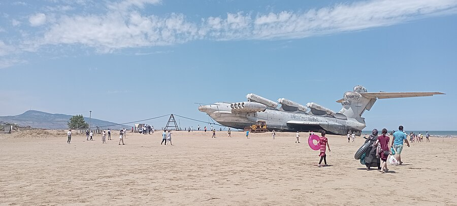

aircraft country.
every conventional wing lives up here — free to climb, free to bank, free to turn. nothing on this page can reach it.
descend.
h/b — height above the surface, divided by wingspan. the one dimensionless number an ekranoplan lives by.
below one wingspan of height, the ground starts to screen the wing's downwash. экран (ekran) is russian for screen. ekranoplan: a glider screened by the ground.
at this boundary the induced-drag penalty has fallen 0.4%. the instrument is not wrong — it is boring. the interesting sky is lower.
a conventional aircraft visits this band only at takeoff and landing. the ekranoplan never leaves it: above ground effect its wing is too small to fly, and in a bank the lowered wingtip meets the sea.
the textbooks call this the edge of significant ground effect. the curve disagrees: nearly everything happens in the last tenth of a span.
three aircraft were built to live down there, by rostislav alexeyev's central hydrofoil design bureau in gorky — a hydrofoil yard that taught a ship to fly, not a plane to swim.
- length
- 92 m
- span
- 37.8 m
- mass, max
- 544 t
- engines
- 10 × vd-7
- first flight
- oct 1966
- end
- sank 1980
eight booster turbojets blew air under the wing for takeoff; two more on the fin cruised it at ~500 km/h. the cia's satellite interpreters found it at kaspiysk in 1967 and named it the caspian sea monster — the nickname outlived the program. at 544 tonnes it was the largest flying machine of its era, and the largest ekranoplan ever.
- length
- 58 m
- span
- 31.5 m
- mass, max
- ~140 t
- engines
- 2 × nk-8 + nk-12
- first flight
- 1972
- built
- ~5
the transport — the only ekranoplan to serve in numbers, hauling naval infantry at ~400 km/h. the nk-12 on its fin is the tu-95's engine; the nose jets existed only to blow air under the wing until it was flying.
- length
- 73.8 m
- span
- 44 m
- mass, max
- ~380 t
- engines
- 8 × nk-87
- in service
- 1987
- armament
- 6 × p-270 moskit
the missile ship — six supersonic moskit tubes on the spine, launched on the run at 550 km/h, under the radar horizon and above the wave crests. it survives: towed down the caspian coast in 2020 and beached at derbent, awaiting a museum.

down here the wing's downwash cannot escape; the sea answers with lift. this is the ekranoplan's whole sky — a band thinner than the aircraft is long.
touch down.